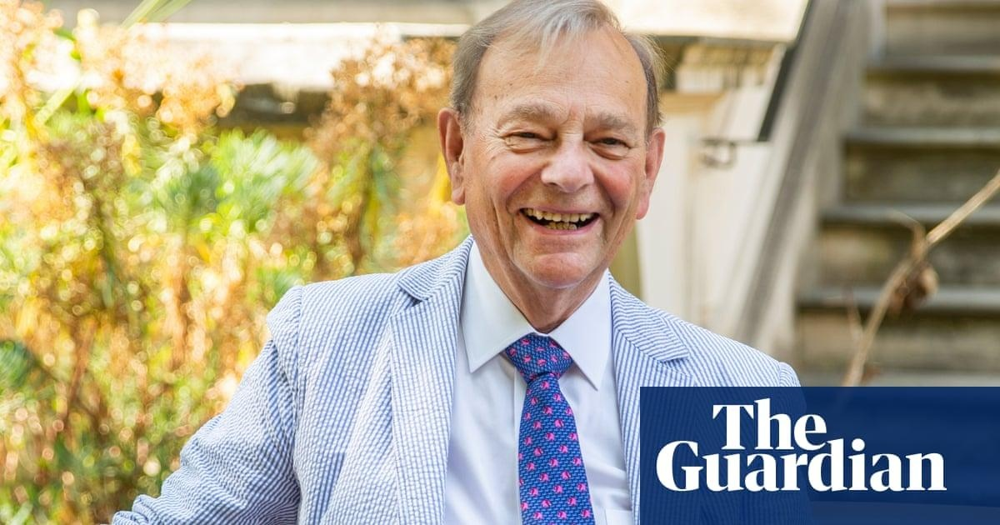

Sir Gordon Conway obituaryIn his book The Doubly Green Revolution (1997), Gordon Conway, who has died aged 85, describes visiting a tiny farm in Kakamega, in western Kenya. On only a quarter of a hectare – 50 metres square – he counted 30 different species of useful plant, plus a calf and a cow: maize, beans, cassava, bananas, vegetables, grasses, different trees and even an area of weeds. Population pressure had forced the subdivision of land, but Gordon argued that this had fostered intensification and innovation, resulting in a rich, ecologically diverse and sustainable farming system. Innovation, intensification and sustainability were themes that inspired Gordon’s work on agricultural development for more than half a century. As an agricultural ecologist, he was primarily interested in the physical aspects of sustainability: in the ability of diverse cropping systems to maximise output, but also sustain soil fertility and resist shocks such as drought. Equipped with a diploma in tropical agriculture from the University College of the West Indies, Trinidad (1961), he spent the next five years undertaking entomological research in North Borneo, which in 1963 became the Malaysian state of Sabah. His work there helped cocoa farmers reduce dependence on harmful and expensive pesticides: when the spraying stopped, the natural predators re-asserted themselves, and the young trees prospered. Humanist in outlook, Gordon was an early advocate of thinking about sustainable livelihoods, building on ideas developed by Robert Chambers at the Institute of Development Studies, based at the University of Sussex. In their much-cited paper for the IDS, Sustainable Rural Livelihoods: Practical Concepts for the 21st Century (1992), Robert and Gordon built a model that emphasised the capabilities of rural people and the need for equity, alongside both physical and social sustainability. They came up with themes that are easily recognisable today: the importance of resilience, the need to think about future generations and the challenge to the rich to reduce their consumption of the world’s natural resources. “For the richer,” they wrote, “the priority is to make lower demands on the environment. If the rich make lower demands, more is left for the poor and for future generations.” Born in Birmingham, Gordon was the elder of two sons of Thelma (nee Goodwin), a geography teacher, and Cyril Conway, an engineer. The family moved to Richmond, south-west London, and Gordon went to Kingston grammar school. His first passion was entomology, and his bedroom was full of specimen boxes containing moths, butterflies and beetles. From Kingston Polytechnic (now Kingston University) he went to the University College of North Wales, Bangor (now Bangor University), where he gained a BSc in ecology (1959), followed by a diploma in agricultural science (1960) at Cambridge. After Trinidad and Sabah he took a PhD (1969) at the University of California, Davis. In 1970 he joined Imperial College London, then part of the University of London. In 1977 he became director of the Centre for Environmental Technology, based at Imperial, and from 1980 its chairman and professor of environmental technology. He directed the sustainable agriculture programme at the International Institute for Environment and Development (1986-88) in London, and then went to New Delhi for the Ford Foundation (1989-92) to promote its human welfare objectives by managing programmes in India, Nepal and Sri Lanka. As vice-chancellor of the University of Sussex (1992-98) he helped establish the Brighton and Sussex medical school; he also chaired the IDS. The first non-American to serve as president of the Rockefeller Foundation (1998-2004), then with an endowment of more than $3bn, he led its programme and helped launch work on HIV/Aids. He had advisory roles with international organisations including the Agriculture for Impact programme funded by the Bill & Melinda Gates Foundation, and the Consultative Group on International Agricultural Research, an international umbrella organisation whose research centres in different countries pioneer new varieties and agricultural techniques in wheat, maize, rice and other crops. He continued this work into his 80s, and helped shape policy on agricultural development in a world with growing population and increasing environmental stress. He also served as president of the Royal Geographical Society (2006-09), was elected a fellow of the Royal Society in 2004 and was knighted in 2005. That year, too, he returned to Imperial as professor of international development, and joined DfID as chief scientific adviser, supporting its work towards the UN’s millennium development goals. He also chaired the Runnymede Trust Commission on British Muslims and Islamophobia, whose report Islamophobia: A Challenge for Us All was published in 1997. Gordon was a kind friend and colleague, an inspiring speaker and a good teacher. He loved travel, films and music, and the roses in his Sussex garden. In 1965 he married Susan Mumford, a scholar of culture, arts and crafts in Thailand and Myanmar. She survives him, along with their children, Simon, Zoe and Kate. Comments (…) Sign in or create your Guardian account to join the discussion |
 |